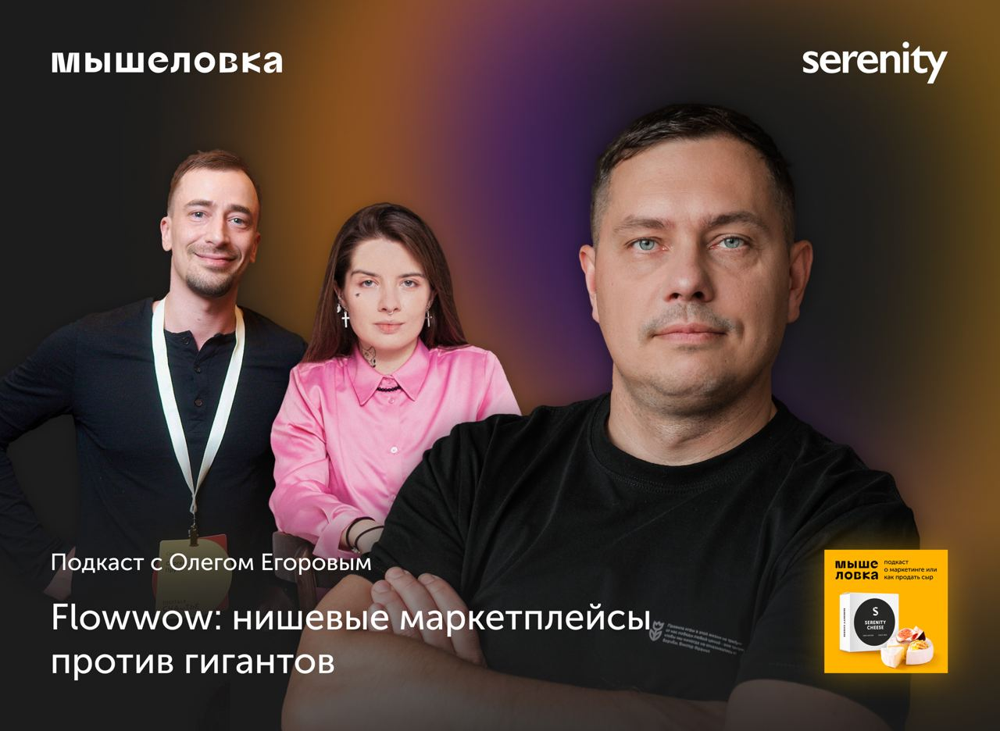

Считаю Flowwow уникальным кейсом, когда компании удалось создать свой голубой океан и много лет продолжать эффективно наращивать обороты.
Будет полезно всем, кто развивает продукты в условиях насыщенного рынка и ищет пути выйти из тени крупных игроков.
